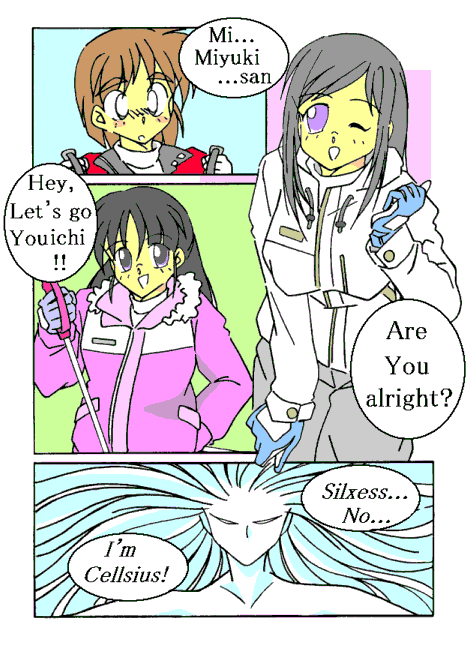
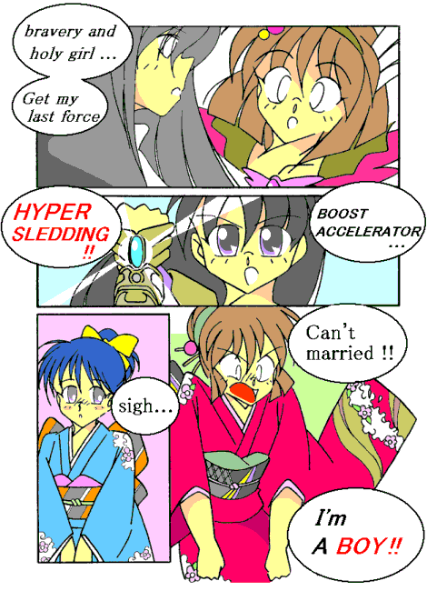

（ここは……どこだ？）
気がつくと、俺は何もない場所に一人で立っていた。
目の前はおろか右も左も……そして上も下も白一色で、どこまで続いているのかさえも全く判らなかった。
｢おーい、誰もいないのかああぁぁぁ―――っ！！｣
俺は叫んでみた。すると俺の叫び声は、やがてこだまになって帰ってきた。
（するとここは山の中か谷底、ということになるのかな？）
……などと考えていると、足元から強烈な冷たさが伝わってきた。
｢冷たっ！？ これは……雪か？｣
そう、俺の足元では雪が積もっていて、俺の足はふくらはぎの部分まで埋まっていた。
そして上空は雪雲に覆われていて、白一色の世界のように見えていたのだ。
やがて目が慣れてくると、目の前にある山の稜線が見えてきた。
｢あの山……見覚えがあるぞ。確か……｣
そのとき、俺の頭の中で声が響いた。
｢助けて｣
俺は思わずあたりを見回した。
周囲には誰の姿もなかった。しかし俺の頭の中で、訴えるような声が再び聞こえてきた。
｢お願い……誰か助けて……私を止めて｣
そして目の前の山とダブるように、少女の姿が浮かび上がった。
｢待ってくれ！！ 君は一体……あ、あれ？ ここって……俺の部屋？｣
気がつくとそこは自分の部屋で、俺は熊のぬいぐるみを抱いてネグリジェ姿でベッドで上半身を起こしていた。
２学期の終業式の日に俺が見た夢……それが今回の事件の発端だった。
変身美少女戦士ミラージュガール
番外編２：｢雪と少女と精霊と｣
原作＆文：ライターマン 原案：ラウルさん
そして冬休み――
｢スキー♪ スキー♪ スキー♪ スキー♪ スキー♪ 楽しいスキー♪｣
特急列車の中、俺の目の前の座席にいる男子の一人は、出発からずっとこんな調子だ。突然の話ではあったが、スキーができることが余程嬉しかったようである。
もう一人の方は対照的に、ずっと文庫本を読みふけっている。
ただ、ときどき本から目を離してこちらを見ては、目があって慌てて文庫本に目を戻している。
そんな姿を見ると、俺は思わず｢かわいい｣などと思ってしまう。
その俺の横の席に置いてあるバッグの中では、一匹の猫(？)が息をひそめて潜り込んでいた。
（２年ぶり……かな？）
県境越えて雪景色になり始めた窓の外を見ながら、俺はぼんやりとそう思った。
俺の名は……三代武士（みしろ･たけし）。１４歳で私立津留木（つるぎ）学園中等部の二年生……だった。
実はこの名前を使うのは３ヶ月ぶり、事情があって今は違う名前を使っている。
ところが今回はまた別の事情で、これから行く場所で自分自身である武士を演じる……なんて奇妙なことをやる羽目になっている。
ちなみに現在の俺は、｢真奈美｣、｢真奈美ちゃん｣、あるいは｢真奈美お姉さま｣と呼ばれてる。結構恥ずかしかったりするのだが、ようやく慣れてきたところだ。
真奈美というのは俺の双子の妹、三代真奈美（みしろ・まなみ）のことだ。……本当は存在しないけど。
何で俺が自分自身の妹として、女の子みたいな名前で呼ばれているかって？ それは今の俺の身体が、どこから見ても完全に女の子だからである。
じゃあ、何で女の子が｢武士｣で｢俺｣なのか？ それは俺が本当は男だったからである。
俺が真奈美と呼ばれるようになったきっかけは、父さんの仕事の都合で新間（しんま）市に引っ越した春休みの出来事だった。
引越しの荷物の中から１個のブローチを見つけた俺に、母さんは、｢私は昔、美少女戦士だったのよ｣と説明した。
最初、俺はその話を信じなかった。……だけど、それは嘘ではなかった。
変身のキーワードを唱えると、ブローチが光り輝き、身体を包み込み……そして光の中から一人の美少女戦士が現れた。
ただし、美少女戦士に変身したのは母さんではなく……なんと俺自身だったのだ。
身体が男から女へと変わり、パニックに陥る俺だったが、運命はもっと過酷だった。
母さんたちが閉じたはずのこの世界と邪霊界とを繋ぐ｢扉｣が再び開き、俺は白き光の美少女戦士ミラージュホワイトとして、他の美少女戦士たちと共に戦わなければならなくなったのだ。
幸い（？）なことに、最初のうちは変身を解いてしばらくすると、俺の身体は元の男の子に戻った。
もっとも変身を解いてから１０時間は女の子の状態だったので、女の子の服に着替えなければならなくて、これが結構恥ずかしかった。
状況が変わったのは、強力な｢魔人｣が出現してからだった。
｢魔人｣に対抗するために俺たちもパワーアップしたのだけど、その影響で変身後に女の子でいる時間も１０時間から５日間へとパワーアップしてしまったのだ。
それでも｢変身は一時的なもの｣と思っていたのだけど、身体が女のまま男に戻る前に再び変身――というのを繰り返しているうちに、俺の身体の方が女性に馴染んでしまっていた。
そして……最後の戦いのときに変身した俺は、とうとう男の身体に戻れなくなってしまい、女の子としての人生を歩まなければならなくなった――という訳である。
まあ、最後の戦いの時に戻れなくなるのを承知で変身したんだから、後悔はしてないけれど、女の子としての生活にはまだ慣れていない事が多い。
そんな俺に母さん、それに父さんも加わって、俺を｢なんとか女の子らしくしよう｣といろんな事を画策している。
ある日突然、俺は自分の部屋を模様替えさせられた。
ピンクのカーテンに小さな鏡台、男の子用の衣類がほとんど処分され、ベッドの上には熊のぬいぐるみ……と、まるっきり女の子の部屋になってしまっていた。
反発した俺だったが、裸で寝る訳にもいかないので用意されたネグリジェを着て、熊のぬいぐるみを抱いてベッドで寝るようになった。
だけど俺の心は相変わらず、ほとんど男の時のままである。
……いや、嘘じゃない、本当だって…………信じて、お願いだから。
美少女戦士は俺の他にも２人いる。
ただ……その正体は実は男。今、俺の向かい側の席に座っている２人である。
さっきから、｢スキー♪ スキー♪｣と騒いでいるのは赤き炎の美少女戦士ミラージュレッドの礼戸一明（れいと･かずあき）。
いつも明るく俺たちの中のムードメーカーであるこいつは女装が趣味であり、俺は何度も振り回されたことがある。
そして静かに本を読んでいるのが青き水の美少女戦士ミラージュブルーの古木祐一（ふるき･ゆういち）。
優しくて意外に芯が強い祐一は、今では俺の……彼氏である（赤面）。
思えば最初に女の子の姿で祐一と出会った時から、俺はこいつに｢女の子としての感情｣を抱いていたのかもしれない。
それまで苦痛でしかなかった変身後の女の子の時間も、祐一といると楽しかったし、最後の戦いで男に戻れないと判っていても変身したのは、祐一を失いたくなかったからだった。
祐一と礼戸の２人は変身したときこそ身体が女の子になるけれど、変身を解除するとすぐに男の子に戻っていたのだから不公平である。
もっとも……今、神様とかが現れて俺に、「男に戻すことができるから今すぐ元に戻るか？」と訊いてきても……答えは多分NOだ。祐一との関係をいまさら壊したくはないからな。
そしてバッグの中に詰め込まれてグロッキー寸前の猫――実は精霊界から来た妖精のペルティノことペルである。
小動物であればなんにでも変身できるのだけど、列車内はスキーシーズンのせいか動物の持ち込みが禁止されていて、仕方なくバッグの中で我慢してもらっている。
今、俺たちは長野県のとあるスキー場へと向かっている。
それは、俺が終業式の日より毎晩見ている夢を母さんとペルに話したことがきっかけだった。
｢ふーん、そんな夢を見ているの？ で、その山が例の……？｣
｢うん、長野の逸郎叔父さん家の近くにある山の形と同じなんだ｣
俺の叔父にあたる能勢逸郎（のせ・いつろう）さんは、長野のスキー場近くで温泉宿をやっていて、１年か２年に１回程度遊びに行っている。
そこで見た山の形が、夢の中で見た山と同じだった。
｢どう思う？ ペルティノ｣
母さんがペルに尋ねる。
｢うーん、普通に考えればただの夢――という可能性が高いですね。ただ……｣
｢ただ？｣
｢ただの夢にしてはディテールがはっきりしています。それに夢の中で出てきた少女ですが、肌と服が真っ白で髪は黒く、そして、『私を止めて』と言ったんですね？｣
｢ああ、そうだよ｣
｢まさかとは思いますが……調べてみる必要はあると思います｣
……という訳で、俺たち３人とペルは調査のため長野に行くことになった。
幸い逸郎叔父さんの宿で団体客のドタキャンがあったという事で、正月までそこに泊まれることになった。
調査にしては少し長いと思ったけど、そこは、｢邪霊界の魔物たちとの戦いでがんばってくれたご褒美｣ということらしい。
祐一と礼戸にこの話をすると、２人とも同行を承諾した。礼戸なんか｢調査なんてさっさと終わらせてスキーを楽しもうぜ｣と言って、がぜん張り切っている。
俺もこの意見には賛成なのだが、１つだけ問題がある。逸郎叔父さんたちは俺が女の子になっているのを知らないのだ。
三代家に子供は一人しかいないことも知っているので、「双子の妹の真奈美」という肩書きも叔父さんには通用しない。
そこで俺は久しぶりに、男の武士として逸郎叔父さんの所へ行くことになった。
少し厚めの生地のズボンとセーターにダウンジャケット……という身体のラインが見えにくい服装で、髪はうなじのあたりで紐で結び、ジャケットの内側に入れて目立たなくしている。
｢はあぁぁ――っ、ようやく着きましたあ……｣
３時間あまりの特急列車の旅が終わり、改札を過ぎるのを待ちかねたように、猫の姿のペルがバッグから出てきて背を伸ばした。
｢あんまり喋るなよ。まだ人がいるんだからな｣
俺がペルに釘をさすと、ペルは何もいわずに頷いた。
｢それから祐一｣｢なに？｣
訊き返してきた祐一に、俺は強い口調で言った。｢……ここでは俺のこと『真奈美』なんて言うなよ。一発でばれてしまうからな｣
｢う、うん。判ったよ真……三代……君｣
少し詰まりながら祐一が答える。うーん、大丈夫だろうか？
｢やれやれ、この調子だと結婚したら絶対に尻に敷かれるぞ。ところで三代、確か旅館から迎えが来てるって言ってたな｣
｢ああ、来てればすぐに判るはずだよ｣
そう言って駅の出入り口から外に出ると、目の前にそれはあった。
『歓迎 三代御一行様』
大きくそう書かれた旗を持って、逸郎叔父さんがこちらに手を振っていた。
祐一と礼戸、それにペルが思わず立ち止まった。
｢な、なんか無性に逃げ出したくなってきたぞ｣
一歩下がりながら礼戸がつぶやくが、俺は苦笑いをしながら言った。
｢いつもこんな風なんだよ。割と繁盛している旅館だから、団体客用にこんなこともよくやってるらしい。ま、慣れればそんなに気にするもんじゃないよ｣
そう言って俺は、みんなを叔父さんのところへと連れて行った。
｢わっはっは、武士君が来るのも２年ぶりだし、友達を連れて来るなんて初めてだったからね。驚かせてしまったかな？｣
｢え、ええまあ……｣
車の中、運転している叔父さんの言葉に助手席の礼戸が答えると、叔父さんは再び｢わっはっは｣と豪快に笑った。
｢ところで初枝ちゃんたちは元旦に来るんだったね？｣
｢は、はい。父さんたちが大晦日まで仕事なんで、一緒に来るそうです｣
運転席の後ろに座った俺が、声を低く抑えて答える。
｢そうかあ。それにしても武士君、しばらく見ない間に可愛く……いや綺麗になったな｣
叔父さん言葉に思わずドキッとしてしまう俺。そのとき礼戸が話題をそらせるためか、叔父さんに話しかけた。
｢ところで九郎ヶ岳ってこの近くなんですか？｣
｢わっはっは、さすがに武士君の友達だなあ。あいにくそこはときどき未確認生命体が出るから、魔よけのベルトを買ってから行かないと危ないぞ｣
叔父さんがそんな冗談（？）を言いながらハンドルを切ると、目的地の旅館が見えてきた。
｢おー、これは結構立派な旅館じゃないか｣
礼戸が言うと古木も頷いた。
｢なんかいかにも老舗って感じだけど……こういう所って結構高いんじゃ｣
古木が心配そうに言ったのも無理はない。
門を通過して見えてきたのは、木造２階建ての古めかしいが立派に作られた建物だったのだ。
｢期待を裏切るようで悪いが、この本館は『金がかかっても雰囲気を大事にしたい』って人専用で、君たちが止まるのは少し奥の別館なんだ。ただ、別館の方がゲームコーナーや２４時間使える大浴場があるから、君たちにはそっちの方がいいんじゃないかな？｣
叔父さんが笑いながら言うと、祐一と礼戸は頷いた。
｢そうですね。立派過ぎると緊張してかえってくつろげないですよ｣
礼戸の言葉に全員が大笑いをした。
車が本館の横の道に入ると、目の前に鉄筋５階建ての別館が見えてきた。
さらにその奥には……
｢あれ？ お家の方、どうかしたんですか？｣
工事用の足組みに囲われた叔父さんの家を見て、俺は訊ねてみた。
｢ああ、元々建物が古くなってはいたんだが、この前水道管が凍結して破裂しちまったんで、全面改装することにしてな。おかげで炊事、洗濯、風呂は旅館のを使ってるよ｣
｢へえー、それは大変ですね。そういえば雪雄さんは元気にしてますか？｣
雪雄さんというのは叔父さんの息子、つまり俺にとっては従兄弟にあたる。
２つ年上で、俺がここに来るときはいつもスキーを教えてくれたり、いろいろとお世話になっている。
｢ゆ、雪雄……か？ 雪雄は……元気だよ。今は買い物かスキーだと思うが……戻ってきたら……挨拶に行かせるよ｣
｢？？｣
動揺したような叔父さんの言葉に、俺は首を傾げた。しかし叔父さんはそれを誤魔化すためか、ことさら明るい口調で言った。
｢そうそう、君たちの部屋は別館の40３号室で、すでにレンタルのスキー用具を入れといた。荷物は私が入れといてあげるから、今から滑りに行ってみるかね？｣
｢はいっ、ぜひそうさせてもらいますっ！！｣｢｢…………｣｣
叔父さんの提案に、礼戸が勢いよく返事をした。
｢ひゃっほー！！ おーい、三代、古木｣
礼戸が俺たちの近くを軽やかに通過していく。以前に２回スキーに行ったことがあるということなので、早速リフトで上って滑り降りていた。
一方、祐一の方はゆっくりと滑って、俺の前でぴたりと停止した。
｢うまいじゃないか祐一｣
俺が誉めると、祐一は少し恥ずかしそうに頬をかいた。
実は、祐一は今回が初めてのスキーである。
ペルが問題の山の周囲を調べている間、叔父さんの勧めもありスキーを楽しもうということになった。
｢僕はここで待ってるから、二人で行ってきて｣という古木を俺は強引に引っ張り出した。せっかくのチャンスなんだから、滑らないと損である。
俺は初心者用のスペースで、祐一にスキーの滑り方を教えることにした。
さすがに祐一は運動が得意なだけあって飲み込みが早く、転び方や止まり方など怪我をしないためのテクニックなどはすぐに憶えた。
そして斜面の登り方やボーゲンによる滑り降りもほぼマスターした。
｢あと何回か練習したら初級コースに挑戦してみるか？｣
俺は微笑みながら祐一に言った。
そして練習の後、初級コースのゲレンデに俺と祐一はいた。
俺はリバーシブルのダウンジャケットを裏返してピンクの生地を外側にし、髪を縛っていた紐を解いて外に出した。
これだけで俺の姿は女の子に見えるらしい。何人かの男に誘われたけど、俺はそれらを無視して祐一と一緒に滑っていた。
さすがに最初なので、祐一はゆっくりとスピードを抑えて、そしてバランスよく滑り降りていた。
｢すごいな。とてもさっき始めたばかりとは思えないよ｣
｢真奈……三代君の教え方がよかったからだよ。ごめんね、本当はもっと滑れたろうに僕なんかのために｣
｢何言ってんだよ。俺は祐一と一緒に滑りたいんだ。気にすることないさ｣
そう言って俺は微笑んだ。
｢そういえば礼戸君は？｣
｢あいつなら……ああっ、あんな所に｣
そう言って俺が指差した先には、中級コースから滑ってきてこちらに向かってくる礼戸の姿があった。
｢あいつ、ここへ来た目的をすっかり忘れてるなあ｣
はしゃぎながら滑っている礼戸を見て俺は思わず苦笑した。しかし……
｢うわっ！！｣
初めての中級コースで勢いをつけ過ぎた礼戸は、斜面の凹凸にバランスを崩して後ろに倒れこんだ！！
そしてそのまま滑りながら、俺たちの方に突っ込んできた。
｢危ない！！｣
そのとき、素早い動きで滑り降りながら礼戸に近づく人物がいた。
その人物は礼戸を抱くようにして自らも倒れこみ、自分のスキー板を使って滑り落ちる速度を落としていった。
そして俺たちの前で２人はようやく止まった。
｢大丈夫……ですか？｣
礼戸を助けた人が礼戸の顔を覗き込みながら言った。
それは若い女の人だった。
高校生だろうか？ 俺たちよりも少しだけ年上と思われるその人を……俺はどこかで見たような気がした。
｢は、はい……大丈夫です。どうも……ありがとうございました｣
助けられた礼戸が女の人に礼を言った。興奮しているせいか、その顔は少し赤くなっているように俺は思えた。
｢気をつけて、少し慣れてきて油断をすると大怪我をするから｣
女の人はそう言って立ち上がり、再び滑り降りようとした。
｢あ、あのっ！！ お名前は？｣
｢……美雪（みゆき）｣
礼戸の問いに女の人……美雪さんは滑り降りながら、小さな声で短く答えた。
そして俺は、美雪さんが見えなくなったとほぼ同時に気がついた。……彼女が夢の中に出てきた少女に、なんとなく似ていたことに。
コツコツ、と音がしたので窓を開けると、小鳥に変身していたペルが宿の中へと入ってきた。
｢お帰りペル｣
｢ただいま。いやー、途中いきなり突風が吹いたかと思うと急に寒くなって……凍りつくかと思いましたよ｣
そう言ってペルは小鳥から猫の姿になると、暖房の噴出し口付近でがたがたと震えだした。
｢大変だったんだ。……ごめんね、僕たちばかり遊んでいて｣
祐一がすまなそうに言うと、ペルは首を横に振った。
｢いえ、よく調べてから行かないと遭難する危険もありますから。それに、いざとなったらあなたたちに戦ってもらわないといけませんから、そっちの方が大変ですよ｣
｢ということは、やっぱり戦う可能性があるのか？｣
｢今のところはなんとも……でも『力』らしきものは感じます。最悪の場合は戦うことになるでしょう｣
｢そうか、そうなると問題は……こいつだな｣
そう言って俺はニヤリと笑いながら礼戸の方を見ると、礼戸は俺を少し睨みながら言った。
｢なんだよ。俺がお前らの足を引っ張るというのか？｣
｢年上の女性に一目惚れして、さっきまで必死になって探しているのを見たんじゃあな｣
｢うるさいっ！！ 俺だってやるべきときはちゃんとやるさ｣
｢…………一体どうしたんですか？｣
俺たちのやり取りを見ていたペルが、不思議そうな顔で訊ねてきた。
｢それがさあ……｣
俺がペルに話を始めると、礼戸はむくれてプイッと横を向いた。
｢……そんなことがあったんですか｣
｢でさ礼戸の奴、しばらく呆然としてて、後で必死になってその美雪さんを探したんだけど、見つかんなくて落ち込んで帰って来たというわけ｣
俺がそのときの状況を一通り説明すると、ペルが感心したように頷いた。
｢へー、礼戸さんも普通に男の子だったんですねえ｣
｢どういう意味だ！？｣
｢お前、ときどき女の子の格好とかしてるからそんなことを言われるんだよ。ところでペル｣
｢なんでしょうか？｣
｢ペルは今回何か心当たりがあるんじゃないか？ ここに来る前も、何かを気にしてるような素振りだったし｣
｢それは……まだ確実じゃないし……いや、やはり言っておきましょう｣
そう言ってペルは少しのあいだ口をつぐんだけど、やがて俺たちの方を向くと語りだした。
｢私が気にしているのは、遥か昔に精霊界からこの世界に来た精霊シルクエスがこの地のどこかに眠っていて、そして目覚めようとしているかもしれないという事です｣
｢シルクエス？ 精霊界から来た精霊って、そんなのがいたのか？｣
｢はい、これは私が精霊界の言い伝えで聞いた話ですけど、昔、この世界と精霊界と邪霊界――３つの世界がかつてないほど接近したことがあったそうです。そのとき精霊界では精霊をこの世界に送り込んで、邪霊界の魔物たちと戦う事にしたのです。そうして派遣された精霊がシルクエスだったのです｣
｢…………｣
｢シルクエスは風と水、それに冷気を操るのが得意だったと聞いています。そしてその肌や着ている物は白く、反対に髪の色は漆黒の若い女性の姿だったそうです｣
｢それって……俺が夢で見た？｣
｢ええ、言い伝えに聞いた特徴に似ているものですから、気になってるんです｣
｢でも、精霊だったら別に心配する必要なんか……｣
｢いえ、シルクエスは純粋な存在ゆえにその力は強力でしたけど、周囲の影響を受けやすかったのです。彼女は自分が倒した魔物、そして人間からもわずかに発する邪念にとらわれてしまったのです｣
｢それじゃあシルクエスは――｣
｢心の中で破壊への衝動が少しずつ大きくなっていったそうです。理性で何とか抑えてはいましたが、暴走するのが避けられないと判断した彼女は遠い地の雪山の中に身を隠し、自らの良心で身体と魂を封印したと聞きます｣
｢なんか……悲しい話だな｣
｢この出来事の後、精霊界ではこの世界に精霊を直接派遣するようなことはせず、影響の受けにくい私たち妖精に変身ブローチを持たせ、この世界に住む正義感と精神力の強い女の子たちにミラージュガールとして精霊界の力を行使して、邪霊界の魔物たちと戦ってもらうようになったそうです｣
｢そうか、俺たちや母さんたちがミラージュガールとして戦う遥か以前にそんなことがあったなんて……じゃあ俺が見た夢がシルクエスからのメッセージだとすれば、『私を止めて』というのは｣
｢恐らく……シルクエスが再び現れようとしているのです。邪念にとらわれた状態で｣
｢おーい三代、晩飯前に風呂に行かないか？｣
日が暮れた頃、礼戸がこう言って俺たちを誘ったけど、俺は首を横に振った。
｢俺はここで留守番してるから、お前たち二人で行ってこいよ｣
｢どうして行かないんだ？｣
｢今の時間帯は結構入ってる人が多いからな。あんまり他人の裸は見たくないし、俺も見せたくはない｣
｢別に俺たち見られても恥ずかしくないけど？｣
｢馬鹿、俺が男湯に入れるならこんな苦労はしないよ。だけど……｣
そこまで言って俺は顔が赤くなった。
心は男のままでも身体は女の子なのだ。男湯に入ることなんてできない。
そして自分自身の裸を見るのもまだ慣れきっていない俺としては、大勢の女の人が入っている女湯に入るのも遠慮したかった。
｢そ、そうだね、とりあえず僕たちだけで入ってくるからあとよろしくね｣
古木がそう言って、礼戸を押し出すようにして部屋から出て行った。
｢やれやれ｣
出て行く２人を見送った俺は、軽く肩をすくめながら座布団の上に座ってテレビのチャンネルを入れた。
テーブルの上にはポットや急須、湯飲み茶碗などの他に、少し厚めのバインダーが置いてあった。
バインダーは宿の紹介や見取り図、緊急連絡先の他に付近の観光名所の案内などもあった。
｢へー、じっくり見た事なかったけど結構名所や旧跡なんてのが近くにあるんだな……まてよ？｣
そのとき、入り口のドアのところからコンコンとノックの音がした。
｢誰かな？｣
そう思ってドアのところへ行って、そっと扉を開けると……そこには懐かしい顔があった。
｢雪雄さん！！｣
｢やあ久しぶりだね、元気だったかい？｣
雪焼けのせいか少し浅黒い顔に笑みを浮かべながら、雪雄さんは僕に声をかけた。
｢ええ、雪雄さんも元気そうですね。えーっと、以前と髪形変わりました？｣
俺が首を少し傾げて訊ねると、雪雄さんは紐で不器用に髪をまとめたぼさぼさの頭に手を当てながら苦笑いをした。
｢ああ、これね。ちょっと不精して髪を伸ばしっ放しにしてたんだけど鬱陶しくてね。まとめようと思ったんだけどなかなか上手くいかなくて｣
｢もったいないなあ。髪型と身だしなみを整えていればアイドル顔負けだろうに。……そうだ、雪雄さんってこの辺の伝説とか歴史とか知ってますか？｣
俺はさっき閃いた事を思い出して、雪雄さんに聞いてみた。
｢まあ、少しは知ってるけど｣
｢この近くに女の子、というか若い女の人が出てくる伝説とかありませんか？ 俺……いや俺たちはそれを探しに来たんです｣
俺がこう言うと、雪雄さんは首に手をあててしばらく考え、そして言った。
｢じゃあちょっと待ってくれるかな？ 確か家の方にこの辺の伝説を集めた本が何冊かあったと思うから、夕食後にそれらを持ってまた来るよ｣
｢ありがとうございます｣
｢それじゃとりあえずこれで失礼するよ。宿の方の手伝いに行かなくちゃならないんだ｣
そう言って雪雄さんは、近くの階段を使って降りていった。
風呂に行っていた礼戸が興奮して戻ってきたのは、それから30分近く経ってからだった。
｢三代……お、俺、見た｣
｢落ち着けよ礼戸、一体何を見たんだ？｣
｢美雪さんだよ、美雪さん！！｣
｢え！？｣
｢彼女、ここの宿泊客だったんだ。これは運命のめぐり合わせかも。ようし絶対に見つけるぞ！！｣
｢おい祐一、礼戸の奴一体どうしたんだ？｣
俺が訊ねると祐一は苦笑いをしながら説明した。
それによると、風呂から上がり、廊下に出た礼戸は奥の階段の方に向かう美雪さんの姿を見つけた……らしい。
すぐに姿が見えなくなり祐一はその姿を確認できなかったけど、礼戸はそれからしばらく走り回って美雪さんの姿を探し、祐一はそれにつきあわされたらしい。
｢はああ、晩飯の後は一緒に雪雄さんの話を聞こうって言おうと思ったんだけど……礼戸は多分無理だな｣
礼戸を見て、俺はそう言いながらため息をついた。
｢これはどうかな？｣
｢……村の娘が鬼への生贄にされそうになる話だな。ちょっと違うんじゃないかな？｣
俺と祐一は雪雄さんが持ってきた本をめくりながら、シルクエスに関係する話がないかを探していた。
雪雄さんは宿の方が急に忙しくなったからということで、俺たちにこのあたりの伝説に関する本数冊を渡すとすぐに戻っていった。
ちなみに礼戸は夕食後、すぐに美雪さんを探しに部屋を飛び出していった。
｢雪雄さんって、なんかだいぶ慌ててた様子だったね｣
｢まあスキーシーズンだからな。時間的余裕がなかったんだろう｣
｢それだけかな？ なんか僕の顔を見て驚いていたような気もするけど……あ、ここの話とか結構それっぽいんじゃないの？｣
祐一の言葉に俺は開いていたページを覗きこんで読み始めた。
｢なになに、雪女伝説？ 冬のある日、……｣
冬のある日、用事で出かけていた男が家に帰る途中で吹雪に遭った。
吹雪は急に止み、気がつくと目の前に白い着物を着た美しい女性が立っていた。
なぜこんな所にいるのかと訊ねた男に、女は自分が遠い所より来た者であると言った。
そしてこの地で眠りにつくこと、眠りを妨げたときには災いが起きるであろう事を告げると、あたりは再び吹雪にみまわれた。
そして吹雪が止んだとき、女の立っていた場所にはいくつもの大きな石が積み重ねられていた。
村人たちは女の事を雪女だと噂し、祠を建てて大木とともに積み重ねられた石を奉った。
｢遠い所から来て眠りについた女の人か……。確かに当てはまりそうだな｣
｢でもこの場所ってどこなんだろう？｣
｢地名は書いてあるけど地図がないからよく判らないな。今日はもう遅いから、明日の朝にでも雪雄さんか逸郎叔父さんに聞いてみよう｣
｢はあーっ……｣
夜もだいぶ遅くなって礼戸はようやく帰ってきた。表情からすると、どうやら美雪さんは見つからなかったらしい。
｢お疲れ様。礼戸、今日は早く寝ておけよ。明日は例の件で出かけることになりそうだぞ｣
俺がそう言うと礼戸の表情が引き締まった。さすがに気持ちの切り替えはちゃんとできているようだ。
｢判った。……あれ、三代はどこかに出かけるのか？｣
｢風呂に入ってくる。今なら人はほとんどいないだろうからな｣
そう言って俺はタオルと着替えを持って、大浴場へと向かった。
宿の敷地内からは豊富な量の温泉が湧き出ているために、大浴場は２４時間いつでも使えるのだ。
俺は途中の人のいないところで髪を結んでいた紐を解き、多少女の子に見えるような格好で女湯（！）へと向かった。
幸い、女湯は脱衣所も浴場も誰もいなかった。
俺はほっとすると服を脱ぎ始め、シャツの下のさらしを解いた。
一応ブラジャーも持って来てはいるのだが、着けると逸郎叔父さんたちに俺が女の子とばれるかも知れないので、今はさらしを巻いて胸の膨らみを隠しているのだ。
浴場に入るとお湯で身体を流し、髪と身体を洗ってから湯船に身を沈めた。
スキーで疲れた身体に温泉が心地いい。
俺は十分に身体を温めると立ち上がり、タオルで身体を拭きながら脱衣所へと向かった。
しかし、少し開いた扉から脱衣所に人がいるのに気がついた俺は、そっと覗いてその人物を見ると驚きに思わず息を呑んだ！！
（雪雄さん！？ 雪雄さんがどうして女湯に！？）
雪雄さんはこの宿の経営者である逸郎叔父さんの息子だから清掃とかの手伝いもしてるかもしれない……けど今の雪雄さんはそんな様子じゃなかった。
雪雄さんは周りを気にしつつ、くしゃくしゃに髪をまとめていた紐を解く。……と、長い髪が肩の下へと流れ落ちた。
（えっ！？）
不精して伸ばした、と雪雄さんは言っていたけど、今の雪雄さんの髪はとてもそんな風に見えない。黒く艶やかで綺麗に切りそろえられていた。しかしその髪型はまるで……
俺が覗いているのも知らず、雪雄さんは浴場と反対側の洗面台に向かい、顔にぺたぺたと何かを塗って布のようなもので顔を拭いた。
そして着ているものを脱いで、籠の中へと入れていく。
だぶついているセーターを、服を、そしてズボンや下着を脱いだ雪雄さんは、溜息をつきながら最後に胸に巻かれていた物を外し始めた。
｢あっ！？｣
全てを脱いで裸になり浴場……つまりこちらの方へ歩き出した雪雄さんの姿を見て、俺は思わず声をあげてしまった。
｢美雪さん！？ 美雪さんが雪雄さんで……雪雄さんが……女の人？｣
そう、そこに立っていたのは雪雄さんではなく……美雪さんだった！！ いや、確かにさっきまで雪雄さんだった筈なのだが……
雪焼けだと思っていた浅黒い肌は、雪を思わせるような白い肌へと変わり……そして腕とタオルで隠していたけど、胸には２つの大きな膨らみがはっきりと見えていた！！
｢えっ！？ 誰だ？ どうして僕が雪雄だと……それに美雪という名前を知ってるんだ？ ちょっと待って……君はどこかで……そんな……もしかして君は……武士君？｣
脱衣所と浴場、扉を挟んで美雪さん……いや雪雄さんと俺は呆然としてお互いを見つめ合っていた。
｢ふーん、そうだったのか。いろいろ大変だったんだな。それにしてもびっくりしたよ。まさか武士君がこんなに可愛い女の子になっていたなんて｣
｢それはこっちのセリフですよ。まさか雪雄さんが女だったなんて……今まで全然知らなかったですよ｣
今、俺と雪雄さんは……浴場で肩を並べるような感じで湯船に身を沈めている。
２人とも裸の状態でしばらく呆然と立ちつくしていたから、身体が冷えてしまったのだ。
俺は再び温泉で身体を温めながら、俺が女の子になった訳を……美少女戦士として戦っていたことを簡単に説明した。
それにしても……かなり以前だけど俺はやはり雪雄さんと一緒に風呂に入った事がある。そのときの記憶では雪雄さんは男で、入っていたのは男湯だと思っていたのに……
そう思って俺は、ちらりと右隣にいる雪雄さんの方に視線を向けてみた。
白い肌をほんのりと赤く染め、肩から腰、そして脚への身体の線は綺麗な曲線を描いている。そして胸の二つの大きな膨らみ……
今の雪雄さんは間違いなく女性だ……それもとても魅力的な。
しかし雪雄さんは苦笑いをしながら俺に言った。
｢知らなくて当然だよ。僕は先週の初めまではちゃんと男だったんだから｣
｢ええっ！？｣
｢先週地震があって壊れた史跡の様子を見に行った後で具合が悪くなってね。熱とかはすぐに下がったんだけど、胸が腫れてきたかな？ ……と思ったらどんどん身体が変わっちゃってね｣
｢…………｣
｢いろいろ調べたけど原因不明。こっちがパニック起こしておろおろしてる間に身体はすっかり女の子になっちゃってたみたいで、今日病院に行ったら、『卵巣と子宮も機能しているのでもうすぐ生理が始まります。そしたら丈夫な赤ちゃんが産めますよ』……だって。うれしくないよそんなこと言われても｣
｢あはは……そうですよね｣
｢医者はとっくに匙を投げて、『女性としての自分を受け入れなさい』なんて言うし、お袋は娘が出来たって喜んで、俺を連れてあちこち買い物に出かけるし｣
｢ブラジャーや女の子の服を無理やり着せられたとか？｣
｢よく判るな？｣
｢俺も母さんに同じ事をやられましたから｣
｢｢あはははは…………はあーっ｣｣
俺と雪雄さんは同時に笑い出し……そして同時に溜息をついた。
｢そう言えば、さっき『壊れた史跡の様子を見に行った後具合が悪くなった』って言ってましたね。それってどこの史跡です？｣
｢山の中腹にある祠だよ。そこには雪女伝説があって石を積み上げた塚みたいなものがあるんだけど、それが少し崩れててね｣
｢雪女伝説！？｣
｢そういえば……身体が変わり始めてから同じ夢を見るようになったな。女の子が出てきて『誰か私を止めて』っていうやつ｣
｢えっ！？｣
｢最近はこうも言っていたよな『精霊の力を使う聖なる乙女を探して。そして私の……』と、そこでいつも目が覚めるんだけど｣
｢それって……もしかして｣
翌朝――
俺たち３人は雪雄さん……いや、美雪さんの案内で、雪女伝説のある祠へと向かっていた。
今の美雪さんは動きやすいようにズボンを穿いているけど、全体的に明るい色合いの服装で、長い髪と膨らんだ胸から誰が見ても女性であることが判る。
朱美叔母さん、つまり雪雄さんのお母さんが、｢もう武士君……あら真奈美ちゃんだったわね……にばれちゃったんだし、いいかげんに女性として生きる覚悟を決めなさい｣と言って着せたものらしい。
ちなみに俺の方もつきあわされて、今は女の子の格好である。
｢へえー、美雪さんって地元の人で旅館の手伝いをしていたんですか。あの時はどうもありがとうございました。俺は……｣
礼戸がはしゃぎながら先導する美雪さんに話し掛ける。
２人には俺が女湯で偶然美雪さんと再会して、雪女伝説の祠の場所を知ってるというので案内を頼んだ、と説明した。
雪雄さんと会っていない礼戸は何の疑いも持っていない様子だったけど、祐一は俺の袖を引っ張り、囁くように訊ねた。
｢ねえ、あの美雪さんって……もしかして？｣
｢あ、ああ……多分お前の思ってるとおりだよ｣
答えながら俺は少し落ち込んでいた。
改めてよく見ると美雪さんの顔立ちは雪雄さんとよく似ている。ただ雪雄さんは男で美雪さんは女、という先入観がそのことに気付かせなかった……と思う。
しかし祐一が気付いたということは、彼が鋭いというよりも俺の方が鈍い……という事なのかも知れない。
それにしても……俺はそう思いながら、目の前を歩く２人の方を見た。
美雪さんと礼戸は出発のときからいろんな事を語り合っていて、かなり和やかな雰囲気が出来上がっている。
礼戸が美雪さんに興味があったのは知っていたけど、美雪さんも礼戸のことを結構気に入ってるようだった。
そういえば、昨日女湯で美雪さんは自分がスキー場で助けた男の子、つまり礼戸の事を俺に訊ねていた。
ちょうどそのとき、礼戸の話が面白かったのか、美雪さんは手の甲を口にあてて笑う……という女性そのものと思える仕草を見せた。
まさか雪雄さん……美雪さんとして礼戸の事を……
｢見えてきた。ほら、あれがそう……なんだけど｣
雪道を進んで美雪さんが指差した先を見た俺たちは、呆然としてそれを見た。
そこにあったのは……祠だったものと思われる残骸と、ばらばらになったいくつかの大きな石だった。
｢これは一体？｣
｢判らない。以前地震があってその直後に来たときは確かに積み重ねられた石の一部が崩れていたけど、これ程じゃあなかったし……｣
｢それっていつの話ですか？｣
｢確か１０日前だったかな？ ……そういえばあのとき、積み重ねられた石に触れたら白い光が……｣
そう言って美雪さんは、ばらばらになった石の１つに手を触れた。するとそのとき、
バシイィッ！！
｢うわっ！！｣
美雪さんが触れた石がスパークし、美雪さんの身体が吹っ飛んだ。
｢美雪さん、美雪さんっ！！｣
礼戸が駆け寄り声をかけたけど、美雪さんは気絶していてピクリとも動かなかった。
｢フフフフ、やはりもうお前には私を封じる力はない。もう誰も私を止めることなどできないのよ｣
どこからともなく声が響き、そして地面から霧のようなものが浮かび上がり始めた。
それは白く、だけどどことなく禍々しさを感じさせるものだった。
やがてそれは一ヶ所に集まり、人の形をとり始めた。
｢お前は……お前はシルクエスか？｣
訊ねた俺に白い影が答えた。
｢ちがう、私はもう精霊のシルクエスではない……私は……そう、私は氷の魔女……セルシウス｣
｢こ、これは？｣
｢恐らくシルクエスの中の邪念が、怨霊のようなものとなってセルシウスとして復活したんでしょう。今ここでセルシウスを止めないと大変なことになります！！｣
ペルの言葉に俺たちは顔を見合わせ頷いた。
気絶した美雪さんを大木の影に寝かせると、俺たちはポケットからブローチを取り出した。
｢｢｢ミラージュマジック ･
ミラクルチャージ！！｣｣｣
俺たちがキーワードを唱えると、ブローチが光り出した。
衣服が光の粒子に変わってそれぞれの身体を回り始め、身体も白く輝く。
祐一と礼戸の光のシルエットが、少しずつ変化する。
髪が少し伸び胸が膨らみウエストは細く、少年の身体から少女の身体へと……
俺の身体はすでに女の子なので変化はないが、身体の中にパワーが充たされていくのを感じていた。
そして俺たちを囲んでいた光の粒子が集まり始める。やがてそれらは光沢のある白い生地でできた服とミニスカート、手袋、ブーツ、ヘアバンドになって俺たちの身体を包み、そしてブローチが胸の中心に固定された。
光が消えたとき、そこに立っていたのは白、青、赤のコスチュームに身を包んだ三人の女の子、正義の美少女戦士の姿であった。

｢はあ――っ！！｣
俺はセルシウスに向かって殴りかかったけど、セルシウスは俺の攻撃を難なく受け止めた。
そのとき感じた奴の身体は冷たくて硬く、まるで氷……そう氷の彫像といった感じだった。
｢気をつけてください！！ 恐らく力の一部分が具現化したものと思われますが、精霊の力は強大です｣
ペルの言葉に俺はその場を離れつつ、両手を交差させて光の塊を生み出した。
｢ライトニングスマッシュ！！｣
右手に持ちかえて打ち出した光の塊がセルシウスに向かう。……だが、セルシウスが右手を振り下ろすと、光の塊は叩き潰された。
｢何いぃっ！？｣
驚く俺の横から、ブルーがいくつもの水の塊を打ち出した。
｢アクアストーム！！｣
水の固まりは集まってセルシウスの塊を包み……一瞬にして凍りつき砕け散った。
｢くそっ……フレイムトルネード！！｣
中からセルシウスがほとんど無傷で現れたのを見たレッドが叫ぶと、セルシウスの足元から炎が上がり、竜巻と化してセルシウスを襲う。
しかし、セルシウスはほとんど苦しむ様子を見せなかった。
やがて炎の勢いが弱まりだした頃、セルシウスが左手を軽く振ると炎は四散して消えてしまった。
｢｢｢プラグイン！！｣｣｣
キーワードを唱えると、俺たちの胸のブローチが光を発してそれぞれの武器が現れた。
俺の左手には剣が仕込まれた篭手、レッドは薙刀、ブルーには弓に変形するバトン。
｢しかし……どうやって攻撃する！？｣
｢迷っている暇なんかないっ！ 変身時間が切れる前に攻撃しまくって突破口を見つけるんだっ｣
レッドがそう言ってセルシウスに突っ込むのを見て、俺とブルーも頷いて走り出した。
ミラージュガールの変身時間は10分。それを過ぎると１２時間は変身できないし、変身を解除した俺たちにセルシウスが襲い掛かってきたら、完全にアウトだ。
何とか攻撃の糸口を見つけないと。
俺たちは３人がかりでセルシウスに立ち向かっていった。
そのとき、木の陰から気絶していた筈の美雪さんが姿を現した。
｢いけない……今の……あなたたちでは……｣
目覚めたばかり、あるいはまだ意識が朦朧としているのか、美雪さんは何かを呟きながら、ふらふらとした足取りでこちらに歩いてくる。
｢フン、いまさら何を｣
セルシウスは美雪さんを見つけると、右手をかざして衝撃波を飛ばした。
｢危ないっ！！｣
その様子を見たレッドが素早く美雪さんに近づくと身体をかばい、衝撃波をその身に受け止めた！！
｢ぐわっ！！｣
衝撃波をまともにくらったレッドがうめく。
セルシウスはさらにレッドと美雪さんに向けて衝撃波を飛ばし、それをかばったレッドのコスチュームはあちこちが裂け、傷口から血が流れだした。
｢レッド、大丈夫か！？｣
俺とブルーはレッドと美雪さんのところに駆け寄った。
レッドはまだ意識はあったけど、傷の痛みもありかなり苦しそうだった。
そのとき、レッドに身体をかばわれていた美雪さんが、両手でレッドの顔を包むようにしながら言った。
｢勇敢にして聖なる少女よ、あなたに私の力を授けます。この力でセルシウスの暴走を止めてください｣
そう言って美雪さんはレッドにゆっくりと顔を近づけ……二人の唇が重なり合った！！
するとレッドの身体から強い光が発し始めた！！
傷口が消え、コスチュームの裂け目が修復……いや微妙にデザインを変えたコスチュームに身を包んだレッドは、薙刀が変形した両刃のランサーを手に猛然とセルシウスに向かっていった。
そのスピードとパワーはすさまじく、セルシウスとほぼ互角の戦いを行なっていた。
｢これは……美雪さん、一体何をしたんです？｣
呆然として俺が美雪さんに訊ねると、美雪さんは首を横に振りながら言った。
｢そう呼ばれている者は、未だこの身体の中で眠っています。私は彼女、セルシウスと名乗る自分の邪念を封印していた力で、先ほどまでこの者の身体の中に閉じ込められていました｣
｢それじゃああなたは……シルクエスの……良心？｣
｢そうです。残念ですが、私には彼女を再び封印する力は残っていません。だから最後の力をあの者と……そしてあなた達に託します。これで彼女を倒して下さい｣
｢…………はい｣
俺たちが頷くと美雪さん、いやシルクエスは右手を俺たちにかざした。
すると、俺とブルーのコスチュームもデザインを変えながら光り出し、パワーが身体の中を駆け巡った。
｢レッド、下がって！！｣
ブルーが、バトンが変形したボウガンを構えながら叫ぶ。
その言葉にランサーで攻撃していたレッドが、その場を飛び離れる。
｢千矢・千流波(せんし・せんりゅうは)！！｣
ボウガンから発射された光の矢は無数に分裂し、セルシウスに襲い掛かった！！
矢の当たった部分から、セルシウスの身体が凍りつく。
｢こ、これは……シルクエスの力か？｣
氷に覆われ身動きできなくなったセルシウスが、驚いたように呟く。
そこにレッドがランサーを回転させながら、セルシウスに近づいてきた。
｢熱波・爆炎陣(ねっぱ・ばくえんじん)！！｣
回転させたランサーの先からいくつもの炎の塊が飛び出し、セルシウスの周りを取り囲み、ひとつの大きな炎となってセルシウスを包み込んだ！！
｢グ、グウワアアァァァーーーッ！！｣
セルシウスがたまらずに叫び声を上げる。
そして俺は左手の篭手から剣を引き抜きつつ、キーワードを唱えた。
｢ブーストアクセラレート・ハイパースレッド！！｣
すると引き抜いた剣が銀色に輝き、そして篭手の方からも光の刃が伸びてきた！！
あたりが静寂に包まれる。俺がスピードアップして内部時間が加速されたためだ。
俺は右手の剣でセルシウスに切りかかった。
そしてその勢いを利用して身体を回転させ、剣と光の刃でセルシウスに切りつける。何度も何度も……
｢極光・瞬！ 迅！！ 斬！！！(きょっこう・しゅん！ じん！！ ざん！！！)｣
そして、とどめの一撃がセルシウスの身体を真っ二つに切り裂いた！！
セルシウスが消滅したとき、美雪さんは大木のそばで倒れていた。
｢美雪さんっ！！｣
レッドが真っ先に駆け寄って、美雪さんを抱き起こした。
美雪さんは、ゆっくりと目を開けると俺たちに喋り始めた。
｢ありがとう。これで私の役目は終わりました｣
｢えっ、役目って？｣
レッドの疑問に、ペルが答えた。
｢彼女はセルシウスを封じていた力、いわばシルクエスの良心です。地震の影響で封印の力が弱まったときに、セルシウスは彼女を美雪さんの身体の中に飛ばして逆に封じてしまったんです｣
｢そうだったのか……だからさっきのキスでパワーアップしたんだ｣
｢あなたたちのおかげで……私は心安らかに眠ることができます。……みなさん……本当に……ありがとう｣
そう言って美雪さんは再び目を閉じた。
｢シルクエスさん？｣
｢彼女は……消えてしまいました。恐らく先ほどの戦いで、残った力の全てをあなた達に与えたのでしょう｣
｢そうか……｣
｢でも彼女はきっと満足していたと思います。自分の力が災いを呼ぶことがなくなったことに、安心している筈です｣
｢うん、そうだね。きっとそうに違いないよ｣
ブルーがそう言うと、俺とレッドも頷いた。
｢なんにしても一件落着……だな｣
俺がこう言うと、レッドも嬉しそうな表情を浮かべて右拳を上げながら言った。
｢そうそう、これで任務も終わって残るは楽しい正月、そして美雪さんとスキー三昧の日々だ――っ！！｣
とたんに起きる大爆笑。それに合わせるかのように、空では雲の切れ間から太陽の光がふりそそぎ始めた。
｢さ、そろそろ元に戻ろうぜ｣
俺の言葉にブルーとレッドが頷き、俺たちは変身解除のキーワードを唱えた。
｢｢｢ディスチャージ｣｣｣
そして――
｢はい真奈美ちゃん、こっち向いて。うーん、やっぱり私の娘ね、よく似合うわ｣
母さんが大喜びでデジカメのシャッターを切る。その傍らでは父さんが、黙々とビデオカメラを構えている。
｢ははは……｣
両親にカメラを向けられた俺は、引きつった笑いを浮かべた。
今日は元旦。俺や祐一、礼戸の両親もやって来て、これから初詣に出かけるところなのだが、その前に旅館の前で、ちょっとした撮影会が始まってしまったのだ。
旅館の玄関のガラス戸を見ると、振袖に身を包んだ俺の姿が映っていた。さっき父さんと母さんに無理やり着せられたものだ。
正直に言えば……結構似合っている。ただ、やはりこれが自分の姿だと思うとすごく恥ずかしい。
｢もう、お母さんいい加減にしてよ。恥ずかしいんだから早く初詣に行きましょう｣
俺の言葉に母さんが嬉しそうに頷く。
｢真奈美もようやく女の子らしくなってきたわね。母さんは嬉しいわ。もうすぐ終わるからちょっと待っててね｣
そう言ってさらに撮影を続ける母さんに、俺は溜息をつきながら呟く。
｢はああ――っ、だからこれはシルクエスの力の影響だって言ってるでしょ。なのにお母さんったら……｣
そう、俺たちをパワーアップしたシルクエスの力は、変身を解いた後もその影響を残していた。
おかげで俺は喋る言葉が全て女言葉になってしまい、何か言う度に妙な気分になってしまうのである。
｢いつになったら治るのかしら、この言葉遣い｣
｢いいじゃないか、三代の場合は言葉遣いだけなんだから｣
｢そうだよ、僕たちなんて……｣
俺の呟きに横から文句を言うのが聞こえたので、俺は声のした方を向いた。
そこには、やはり振袖に身を包んだ女の子が立っていた。
飾り立てられ化粧を施されたその姿は、２人とも文句なしの美少女である。
ただし、２人は自分とお互いの姿にかなり困惑した表情を浮かべている。
まあ、それはそうだろう。鏡に映っているのが自分の姿とは、信じられない……というより信じたくない気分だろう。
この２人、実は礼戸と祐一なのである。何で２人が振袖なんかを着ているかというと……２人の身体は、いまだに女の子のままだったりするからである！！
恐らくはこれもシルクエスの力の影響なのだろうが……変身を解除すれば男の子に戻っている筈の礼戸と祐一の身体が女の子のままだったので、俺たちはすごくびっくりした。
そして母さんたちに連絡して状況を説明したのだけど、母親たちは逆に喜んだようで、その結果が今の俺たちの振袖姿……という訳である。
｢ねえ、ペルティノ。あたしの言葉遣いもだけど、祐一君の身体ってちゃんと戻るんでしょうね｣
ペルに向かって訊ねながら、俺は２人の方を見た。
２人とも振袖姿が似合ってる。
このまま女の子として十分にやっていけると太鼓判を押してもいいくらいだが、２人が……というか祐一がこのまま女の子でいるのは非常に困る。
｢そのことなんですけど……今の祐一さんの身体の中は女性の部分が大半を占めていますけど、調べてみると男性としての部分も安定して存在していることが判りました｣
｢……ということは？｣
｢はい、以前武士さんに使った魔方陣を応用すれば、男の子に戻せる筈です。暴走の危険もないでしょう｣
｢｢よかったあ｣｣
ペルの言葉に礼戸と祐一がホッとした表情を浮かべる。しかし……
｢ただその……これは祐一さんの場合の話でして……｣
｢なっ！？ ちょっと待てっ！！ 俺の場合は違うと言うのか！？｣
礼戸が慌ててペルに迫る。
｢ええ……っと、一明さんの場合はですね……覚醒したシルクエスの力を直接触れ合って受け取ったでしょう？ そのせいか……身体の中がもうほとんど女の子なんですよ。……男の子の部分を探すのに結構苦労するくらいに｣
｢……ということは？｣
｢努力はしますが…………この先の人生を女性として生きる覚悟もしておいた方が……｣
「「「・・・！！」」」
｢な、な、なんてこったああぁぁ―――っ！！｣
頭を抱えて叫んだ礼戸の頭を、母親である弥生さんが、ぺしっという感じではたいた。
｢大声で騒ぐんじゃないの。あんた今一応女の子でしょうが｣
｢だって俺、もしかしたらこのまま男に戻れないかも知れないんだぜ｣
珍しく慌てふためいた表情の礼戸だったが、弥生さんは冷静に言った。
｢いいじゃない。あんた今まで男の癖に女の格好をする変態だったけど、女の子になれば普通に女の子の格好ができるじゃない｣
｢あれは単なる趣味だ。それにもう女装は卒業するって決めてたんだぜ｣
｢あらそう？ じゃあいい機会だから、女装を卒業して女性になっちゃえば？｣
｢なんだよそれ！？｣
｢大丈夫よ。真奈美ちゃんという前例もあるし、あんたなら絶対美人になれるって。３学期から女の子として学校に通えるように、手続きやセーラー服の手配とかはこっちでやっておくから安心しなさい｣
｢するなあぁぁぁ―――っ！！｣
そのとき、
｢まあまあ、礼戸さん落ち着いて｣
興奮する礼戸に優しく語りかける声に、そちらを見るとそこには雪雄さんが立っていた。
礼戸や祐一とは逆に身体の中からシルクエスの力が消えた雪雄さんは、３日後には元の男性の身体に戻っていった。
雪雄さんの身体の中ではシルクエスは眠らされた状態だったので、意外に影響は少なかったらしい。
喜ぶ雪雄さんとは逆に朱美叔母さんはすごく残念そうだった。もっとも、その分のストレスを俺たちを着飾ることによって発散しようとしたために、こっちにとってはいい迷惑だったけど。
礼戸にとっては、あこがれていた美雪さんが実は男だったことはやはり相当のショックだったようだ。
その雪雄さんは礼戸の肩にそっと手を置くと、ささやくように言った。
｢ちょうどよかったじゃないか。僕は男に戻っちゃったけど代わりに君が女の子になってくれたんだから｣
｢え、えっ！？｣
言われた礼戸の顔が赤くなる。
｢最初に会ったときから君にはすごく惹かれていたんだ。お願いだからさ……僕の彼女になってくれないか？｣
礼戸の顔はさらに赤くなり……そして雪雄さんの身体を突き飛ばすと怒りをぶちまけた。
｢ふ、ふざけるなっ！！ お、俺は、男だあぁぁ――っ！！｣
｢でも今は女の子なのよね｣ ｢これからもずっと女の子かもしれないし……｣ ｢振袖姿で『俺は男だ』って言っても全然説得力ないわよ｣
礼戸の叫びに、俺と祐一と弥生さんが冷静に突っ込む。
そして突き飛ばされた雪雄さんは、それでもにこやかに礼戸に言った。
｢礼戸さん、２年したらまたこっちへおいでよ｣
｢２年後？ 何で？｣
｢２年経てば僕は１８、君は１６。結婚できるじゃないか｣
｢・・・するかああぁぁぁーーーっ！！！
俺は男に添い遂げるつもりはねえぇっ！！｣
礼戸の叫びは晴れ渡った元旦の空の下に響き渡った。

（おわり）
おことわり
この物語はフィクションです。劇中に出てくる人物、団体は全て架空の物で実在の物とは何の関係もありません。
あとがき
どうも、ライターマンです。
ミラージュガール番外編｢雪と少女と精霊と｣いかがだったでしょうか？
ラウルさんから｢こんなのを書きたいんですけど……｣送られてきた原案を見て｢おお、結構いいな｣などと期待しつつ……気がつくと自分が横取りして書いている自分がいたりして……
すいません。ストーリー大幅に変えちゃったんですけど、それなりに楽しめる話にしたつもりです。
さて、とんでもないラストを迎えた礼戸君(？)と古木君の二人、古木君はともかく礼戸君はこの後どうなってしまうのでしょう？(笑)
それではまた。
□ 感想はこちらに □